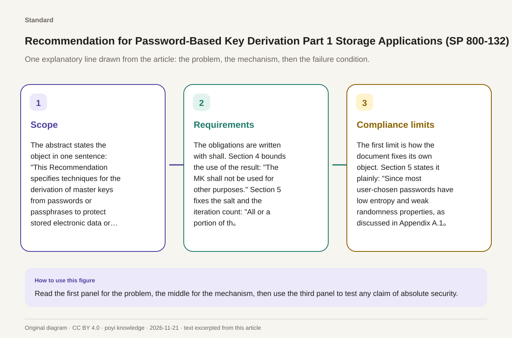
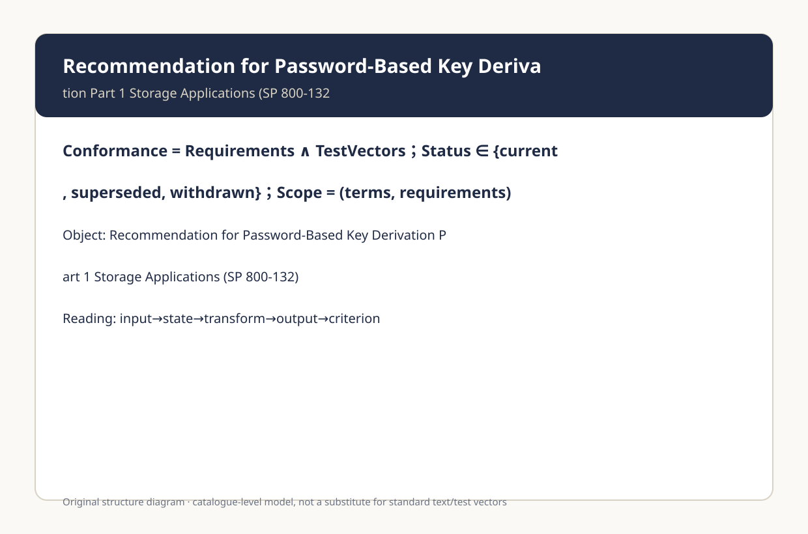

Principles
Standard: Recommendation for Password-Based Key Derivation Part 1 Storage Applications (SP 800-132) (口令基密钥派生·存储应用（SP 800-132）). The abstract states the object in one sentence: "This Recommendation specifies techniques for the derivation of master keys from passwords or passphrases to protect stored electronic data or data protection keys." The title block pins the range to storage, "Part 1: Storage Applications", and the keyword line agrees: "Password-Based Key Derivation Functions, Salt, Iteration Count, Protection of data in storage". The output is a master key, not a password used directly as a key. The words master keys and stored in those quotations fix the object and the use: the technique turns a password into a master key, and the range is data already in storage.

Why it matters
Section 1 names the gap: passwords are not random enough, "Due to the low entropy and possibly poor randomness of those passwords, they are not suitable to be used directly as cryptographic keys." Appendix A.1 makes the attacker model concrete, an offline exhaustive search on superior hardware: "When passwords are used to generate cryptographic keys, it is assumed that an attacker is able to perform an offline search attack on the key derivation process using a system of his own choosing, which may be much more powerful than the system used by the authorized user to generate the key from the password." Appendix A.2 gives the countermeasure principle: "The main idea of a PBKDF is to slow dictionary or brute force attacks on the passwords by increasing the time needed to test each password." The three quotations give one argument: the input is low-entropy, the attacker can search offline on hardware of their own choosing, and the available countermeasure is to raise the cost of each test.
Applications
The obligations are written with shall. Section 4 bounds the use of the result: "The MK shall not be used for other purposes." Section 5 fixes the salt and the iteration count: "All or a portion of the salt shall be generated using an approved Random Bit Generator (e.g., see [5]).", "The length of the randomly-generated portion of the salt shall be at least 128 bits." and "The iteration count shall be selected as large as possible, as long as the time required to generate the key using the entered password is acceptable for the users." Section 5.3 approves a single construction: "This Recommendation approves PBKDF2 as the PBKDF using HMAC with any approved hash function as the PRF." One further value is advice rather than a requirement: "A minimum iteration count of 1,000 is recommended." The wording levels differ: the salt source, the random-portion length and the iteration-count selection are shall requirements, the count of one thousand is stated as recommended, and a single construction is approved.

Limits & attacks
The first limit is how the document fixes its own object. Section 5 states it plainly: "Since most user-chosen passwords have low entropy and weak randomness properties, as discussed in Appendix A.1, these passwords shall not be used directly as cryptographic keys." Derivation is therefore not optional and no shortcut for using a password as a key is offered; the part title on the title block, "Part 1: Storage Applications", confines the use to stored data and data protection keys. The second limit is testability: Appendix B states "However, some requirements are out-of-scope for such testing." and hands those requirements over: "This appendix lists those requirements whose conformance is the responsibility of entities using, implementing, installing or configuring applications or protocols that incorporate this Recommendation."
History
The running head carries the date: "SP 800-132 Recommendation for Password-Based Key Derivation December 2010", and the title block reads "NIST Special Publication 800-132" with "Part 1: Storage Applications", a first edition dated December 2010 with no revision number. The acknowledgements list the authors and their affiliation; the first author's surname carries a diacritic in the retained text, so the name is given outside the quotation to keep every quoted span verbatim-checkable, while the checkable part reads "Elaine Barker, William Burr, and Lily Chen of the National Institute of Standards and Technology (NIST)" and "would like to thank their colleagues at NIST, Shu-jen H. Chang, Morris Dworkin, Allen Roginsky, and John Kelsey". This copy contains no DOI line.
Worked example & verification
Formal model and reproduction steps
[S=\min_i S_i,\quad S_i\in{\text{密钥强度},\text{分组安全},\text{实现安全}}]
Recommendation for Password-Based Key Derivation Part 1 Storage Applications (SP 800-132): the registered public parameters, key material or randomness, and message are mapped through the stated transformation to an output checked against the registered criterion. The worked example is a structural reproduction, not a new test vector; parameter ranges, standard versions and implementation details remain source-bound.
References
- Wikipedia search entry for 口令基密钥派生·存储应用（SP 800-132）. https://zh.wikipedia.org/w/index.php?search=%E5%8F%A3%E4%BB%A4%E5%9F%BA%E5%AF%86%E9%92%A5%E6%B4%BE%E7%94%9F%C2%B7%E5%AD%98%E5%82%A8%E5%BA%94%E7%94%A8%EF%BC%88SP%20800-132%EF%BC%89
- Handbook of Applied Cryptography (Menezes, van Oorschot, Vanstone). https://www.cacr.math.uwaterloo.ca/hac/